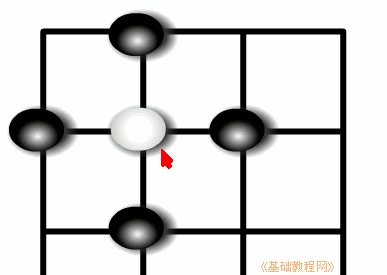
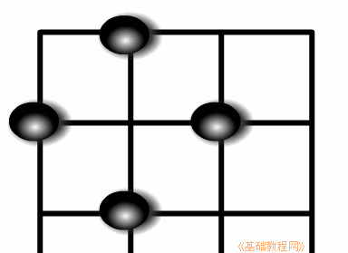
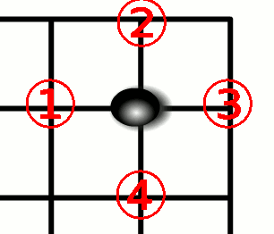
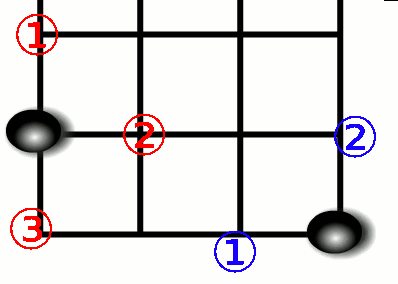
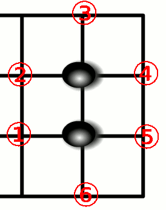
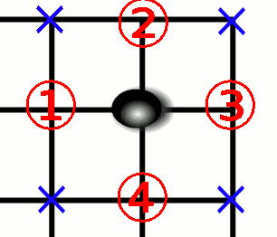

围棋入门基础教程
作者：TeliuTe 来源：基础教程网
围棋要围住地盘，围死对方的棋子，围活自己的棋子，下面我们来看一个练习；
1、吃子
1）当把一个子被彻底围住后，就可以吃掉它，并且从棋盘上拿掉这个子；

2）这个白子周围相连有四个点，当最后一个相连的点被黑棋堵住后，这个子就是一个死子，黑棋走完第四个子后，要立刻把白子从棋盘上拿掉；

2、气
1）棋子周围相连的空点，就叫它的“气”，中间的子周围有四口气，也就是要走四步棋才能吃掉它；

2）边上的子有三口气，角上的子有两口气；

3）如果自己的两个子连在一起了，那么它们的气也加在一起，在中间的两个子连起来有六口气，就不容易被吃掉了；

4）注意数气的时候，只数相连的空点，没有连着的点不算，连在一起的子，数它们总共的气；

本节学习了吃子和数气的基本方法，如果你成功地完成了练习，请继续学习下一课内容；
本教程由86团学校TeliuTe制作|著作权所有
基础教程网：http://teliute.org/
美丽的校园……
转载和引用本站内容，请保留版权信息和本站链接。